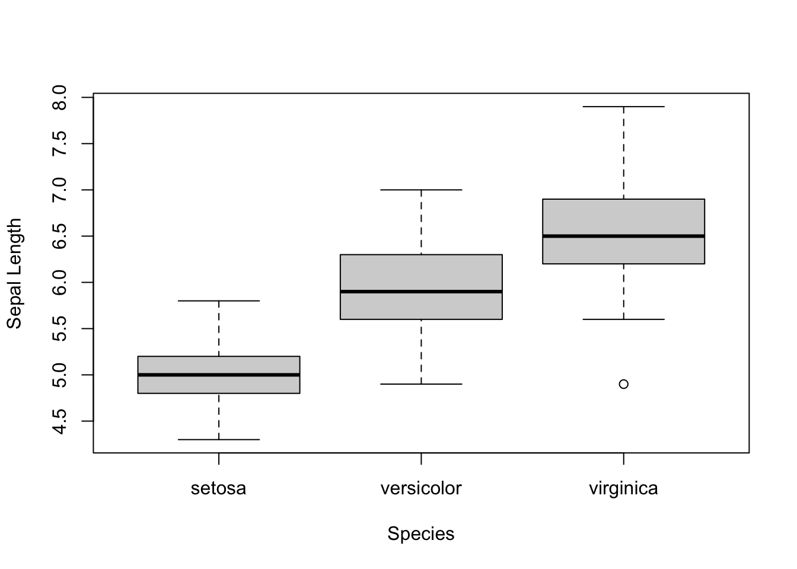

Chapter 2
Tina Lasisi
November 14, 2021
Last updated: 2021-11-14
Checks: 7 0
Knit directory: lasisi_stats/
This reproducible R Markdown analysis was created with workflowr (version 1.6.2). The Checks tab describes the reproducibility checks that were applied when the results were created. The Past versions tab lists the development history.
Great! Since the R Markdown file has been committed to the Git repository, you know the exact version of the code that produced these results.
Great job! The global environment was empty. Objects defined in the global environment can affect the analysis in your R Markdown file in unknown ways. For reproduciblity it’s best to always run the code in an empty environment.
The command set.seed(20211114) was run prior to running the code in the R Markdown file. Setting a seed ensures that any results that rely on randomness, e.g. subsampling or permutations, are reproducible.
Great job! Recording the operating system, R version, and package versions is critical for reproducibility.
Nice! There were no cached chunks for this analysis, so you can be confident that you successfully produced the results during this run.
Great job! Using relative paths to the files within your workflowr project makes it easier to run your code on other machines.
Great! You are using Git for version control. Tracking code development and connecting the code version to the results is critical for reproducibility.
The results in this page were generated with repository version 3964f8c. See the Past versions tab to see a history of the changes made to the R Markdown and HTML files.
Note that you need to be careful to ensure that all relevant files for the analysis have been committed to Git prior to generating the results (you can use wflow_publish or wflow_git_commit). workflowr only checks the R Markdown file, but you know if there are other scripts or data files that it depends on. Below is the status of the Git repository when the results were generated:
Unstaged changes:
Modified: analysis/_site.yml
Note that any generated files, e.g. HTML, png, CSS, etc., are not included in this status report because it is ok for generated content to have uncommitted changes.
These are the previous versions of the repository in which changes were made to the R Markdown (analysis/ch2.Rmd) and HTML (docs/ch2.html) files. If you’ve configured a remote Git repository (see ?wflow_git_remote), click on the hyperlinks in the table below to view the files as they were in that past version.
| File | Version | Author | Date | Message |
|---|---|---|---|---|
| html | b5e84c6 | Tina Lasisi | 2021-11-14 | Build site. |
| Rmd | 9dffef5 | Tina Lasisi | 2021-11-14 | Updating exercise set from Ch2 |
Exercises from Chapter 2: R and exploratory data analysis
Exercise Set 2-1
Download and install the current version of R on a computer to which you have regular access. R is available from the Comprehensive R Archive Network (CRAN) at http://www.rproject.org. (For Linux users, the best procedure will depend on your distribution.)
Open R. When you have succeeded, you should see a window with the licensing information for R and a cursor ready to take input.
(Optional, but recommended) Download and install RStudio. Close your open R session and open RStudio. If you prefer the RStudio interface, then use RStudio to run R for the rest of the exercises in the book.
Visit the book’s GitHub repository at https://github.com/mdedge/stfs to view additional resources, including R scripts, among which is a script to run all the code in this chapter.
Exercise Set 2-2
1) Do the same analyses from the tutorial
(i.e., histogram, take means, box plots, and scatterplot) for the petal length and petal width variables from the iris dataset. (This will be easy if you saved your code as you worked through the tutorial.) What do you see?
Using the head() function shows you the first couple of rows of a dataframe and you can specify how many rows:
head(iris) Sepal.Length Sepal.Width Petal.Length Petal.Width Species
1 5.1 3.5 1.4 0.2 setosa
2 4.9 3.0 1.4 0.2 setosa
3 4.7 3.2 1.3 0.2 setosa
4 4.6 3.1 1.5 0.2 setosa
5 5.0 3.6 1.4 0.2 setosa
6 5.4 3.9 1.7 0.4 setosahead(iris, 10) Sepal.Length Sepal.Width Petal.Length Petal.Width Species
1 5.1 3.5 1.4 0.2 setosa
2 4.9 3.0 1.4 0.2 setosa
3 4.7 3.2 1.3 0.2 setosa
4 4.6 3.1 1.5 0.2 setosa
5 5.0 3.6 1.4 0.2 setosa
6 5.4 3.9 1.7 0.4 setosa
7 4.6 3.4 1.4 0.3 setosa
8 5.0 3.4 1.5 0.2 setosa
9 4.4 2.9 1.4 0.2 setosa
10 4.9 3.1 1.5 0.1 setosahead(iris, n = 10) Sepal.Length Sepal.Width Petal.Length Petal.Width Species
1 5.1 3.5 1.4 0.2 setosa
2 4.9 3.0 1.4 0.2 setosa
3 4.7 3.2 1.3 0.2 setosa
4 4.6 3.1 1.5 0.2 setosa
5 5.0 3.6 1.4 0.2 setosa
6 5.4 3.9 1.7 0.4 setosa
7 4.6 3.4 1.4 0.3 setosa
8 5.0 3.4 1.5 0.2 setosa
9 4.4 2.9 1.4 0.2 setosa
10 4.9 3.1 1.5 0.1 setosahead(x = iris, n = 10) Sepal.Length Sepal.Width Petal.Length Petal.Width Species
1 5.1 3.5 1.4 0.2 setosa
2 4.9 3.0 1.4 0.2 setosa
3 4.7 3.2 1.3 0.2 setosa
4 4.6 3.1 1.5 0.2 setosa
5 5.0 3.6 1.4 0.2 setosa
6 5.4 3.9 1.7 0.4 setosa
7 4.6 3.4 1.4 0.3 setosa
8 5.0 3.4 1.5 0.2 setosa
9 4.4 2.9 1.4 0.2 setosa
10 4.9 3.1 1.5 0.1 setosahead(n = 10 , x = iris) Sepal.Length Sepal.Width Petal.Length Petal.Width Species
1 5.1 3.5 1.4 0.2 setosa
2 4.9 3.0 1.4 0.2 setosa
3 4.7 3.2 1.3 0.2 setosa
4 4.6 3.1 1.5 0.2 setosa
5 5.0 3.6 1.4 0.2 setosa
6 5.4 3.9 1.7 0.4 setosa
7 4.6 3.4 1.4 0.3 setosa
8 5.0 3.4 1.5 0.2 setosa
9 4.4 2.9 1.4 0.2 setosa
10 4.9 3.1 1.5 0.1 setosaUsing the summary() function gives you a quick overview of the dataframe with summary statistics for each variable:
summary(iris) Sepal.Length Sepal.Width Petal.Length Petal.Width
Min. :4.300 Min. :2.000 Min. :1.000 Min. :0.100
1st Qu.:5.100 1st Qu.:2.800 1st Qu.:1.600 1st Qu.:0.300
Median :5.800 Median :3.000 Median :4.350 Median :1.300
Mean :5.843 Mean :3.057 Mean :3.758 Mean :1.199
3rd Qu.:6.400 3rd Qu.:3.300 3rd Qu.:5.100 3rd Qu.:1.800
Max. :7.900 Max. :4.400 Max. :6.900 Max. :2.500
Species
setosa :50
versicolor:50
virginica :50
You can use the $ after a dataframe variable to specify a variable:
summary(iris$Sepal.Length) Min. 1st Qu. Median Mean 3rd Qu. Max.
4.300 5.100 5.800 5.843 6.400 7.900 You can request specific variables like the mean() and median() using this syntax as well:
mean(iris$Sepal.Length)[1] 5.843333median(iris$Sepal.Length)[1] 5.8You can make a historgram for a single variable using the hist() function:
hist(iris$Sepal.Length)
| Version | Author | Date |
|---|---|---|
| b5e84c6 | Tina Lasisi | 2021-11-14 |
Apparently, you can even label this stuff without involving ggplot (who knew?!):
hist(iris$Sepal.Length, xlab = "Sepal Length", main = "")
| Version | Author | Date |
|---|---|---|
| b5e84c6 | Tina Lasisi | 2021-11-14 |
Extracting data for a specific species can be done using square brackets that specify the factor of choice:
mean(iris$Sepal.Length[iris$Species=="setosa"])[1] 5.006If you need to repeat code for multiple factors, you can use a number of options including a for() loop or tapply() or aggregate().
# for loop
for(i in unique(iris$Species)){
print(mean(iris$Sepal.Length[iris$Species == i]))
}[1] 5.006
[1] 5.936
[1] 6.588# tapply
tapply(iris$Sepal.Length, iris$Species, mean) setosa versicolor virginica
5.006 5.936 6.588 # aggregate
aggregate(iris$Sepal.Length, list(iris$Species), mean) Group.1 x
1 setosa 5.006
2 versicolor 5.936
3 virginica 6.588Another option is writing your own functions (although these are more useful for complex scenarios where no out-of-the-box function works):
conditional.mean <- function(x, y){
for(i in unique(y)){
print(mean(x[y == i]))
}
}Once defined, instead of having to copy paste the different variables, you can just cycle through them:
conditional.mean(x = iris$Sepal.Length, y = iris$Species)[1] 5.006
[1] 5.936
[1] 6.588conditional.mean(x = iris$Sepal.Width, y = iris$Species)[1] 3.428
[1] 2.77
[1] 2.974But I prefer using tidyverse functions because I can get a dataframe as an output.
library(dplyr)
Attaching package: 'dplyr'The following objects are masked from 'package:stats':
filter, lagThe following objects are masked from 'package:base':
intersect, setdiff, setequal, unioniris %>%
group_by(Species) %>%
summarise(mean.Sepal.Length=mean(Sepal.Length))# A tibble: 3 × 2
Species mean.Sepal.Length
<fct> <dbl>
1 setosa 5.01
2 versicolor 5.94
3 virginica 6.59You can make a boxplot with base R:
boxplot(iris$Sepal.Length ~ iris$Species)
title(xlab="Species", ylab="Sepal Length")
| Version | Author | Date |
|---|---|---|
| b5e84c6 | Tina Lasisi | 2021-11-14 |
#idk if I did something wrong bur it seems to just overwrite the labels on teh previous labels.Here is a scatterplot with base R:
plot(iris$Sepal.Length, iris$Sepal.Width)
| Version | Author | Date |
|---|---|---|
| b5e84c6 | Tina Lasisi | 2021-11-14 |
Now this scatterplot can have different points added to it to distinguish species + a legend.
plot(iris$Sepal.Length, iris$Sepal.Width, pch = as.numeric(iris$Species),
xlab = "Sepal Length", ylab = "Sepal Width")
legend("topright", pch = c(1,2,3), legend = c("setosa", "versicolor", "virginica"))
| Version | Author | Date |
|---|---|---|
| b5e84c6 | Tina Lasisi | 2021-11-14 |
Obviously, when you don’t have to print in black & white, color is nice to add:
pal <- c("Dark Green", "Orange", "Purple")
plot(iris$Sepal.Length, iris$Sepal.Width, pch = as.numeric(iris$Species), col = pal[as.numeric(iris$Species)],
xlab = "Sepal Length", ylab = "Sepal Width")
legend("topright", pch = c(1,2,3), col = pal, legend = c("setosa", "versicolor", "virginica"))
| Version | Author | Date |
|---|---|---|
| b5e84c6 | Tina Lasisi | 2021-11-14 |
This is how I’d do it with ggplot:
library(ggplot2)Boxplot
iris %>% ggplot(aes(x=Species, y=Sepal.Length, fill=Species)) +
geom_violin() +
geom_boxplot(width = 0.2)+
theme_classic()
| Version | Author | Date |
|---|---|---|
| b5e84c6 | Tina Lasisi | 2021-11-14 |
iris %>% ggplot(aes(x=Species, y=Sepal.Width, fill=Species)) +
geom_violin() +
geom_boxplot(width = 0.2)+
theme_classic()
| Version | Author | Date |
|---|---|---|
| b5e84c6 | Tina Lasisi | 2021-11-14 |
Scatter
iris %>% ggplot(aes(x=Sepal.Length, y=Sepal.Width, color=Species)) +
geom_point() +
theme_classic()+
stat_ellipse() # just adding an ellipse to be extra
| Version | Author | Date |
|---|---|---|
| b5e84c6 | Tina Lasisi | 2021-11-14 |
Finally, we cover how to concatenate (add multiple items to a vector), as is done in the plot legend info above:
c(1,2,3)[1] 1 2 32) A major reason for R’s utility is the wide variety of packages available.
In this exercise, we will install and use the gpairs package (Emerson et al., 2013). The gpairs package will allow us to access a lot of the information we gathered in the tutorial using just one command.
(a) Install gpairs.
If you are using R for Mac or Windows, there will be a “Packages” menu, and you can select the “install packages” option. On any operating system, you also have the option of using the command
install.packages("gpairs")
The downloaded binary packages are in
/var/folders/m7/rxxmkqnj1s362kng5zcd0lpwhz3qpk/T//RtmpiJLeH1/downloaded_packagesYou will be asked to choose a “mirror”—this is just a server from which you will download the package. Picking the one that is geographically closest to you will usually give the fastest installation. You only need to install a package once.
(b) Load the package.
Do this using the library() command:
library(gpairs)Though you only have to install the package once, you have to load it during every R session in which you want to use it. Also notice that though the quotes around gpairs are required when the package is installed, they are optional when the package is loaded.
(c) Now you have access to the functions and data that are part of the gpairs package.
The centerpiece of the gpairs package is the gpairs() function, which produces “generalized pairs plots”—plots that allow simultaneous visualization of pairwise relationships between several variables. Try the following command:
gpairs(iris, scatter.pars = list(col = as.numeric(iris$Species)))Loading required package: gridLoading required package: lattice
| Version | Author | Date |
|---|---|---|
| b5e84c6 | Tina Lasisi | 2021-11-14 |
Some of the plots should look familiar. What do you see? ### 3) Later in the book, we will use a number of original R functions to complete the exercises. Many of the functions are printed here, and one way to define them would be to re-type them (or copy and paste them, if you are reading electronically). But this is tedious and prone to error. A better way is to install the book’s companion R package, stfspack. The package is hosted on github.com rather than CRAN, so you will need to follow a slightly different (but just as easy) procedure to acquire it. First, you will need to install and load the devtools package (Wickham & Chang, 2016) from CRAN. The following two lines of code will do the trick:
install.packages("devtools")
The downloaded binary packages are in
/var/folders/m7/rxxmkqnj1s362kng5zcd0lpwhz3qpk/T//RtmpiJLeH1/downloaded_packageslibrary(devtools)Loading required package: usethisInstalling the devtools package may take a minute or two. With devtools loaded, we can install stfspack from github with
install_github("mdedge/stfspack")Skipping install of 'stfspack' from a github remote, the SHA1 (3e7027d6) has not changed since last install.
Use `force = TRUE` to force installationNow to load the package, use library() as usual
library(stfspack)If you restart R and want to use the package, you need only execute the final library() command. That is, you only need to install the package once, but you need to reload it every time you restart R and want to use the functions defined in it. You can also find an R script containing all the functions included in stfspack at the book’s GitHub repository, http://github.com/mdedge/stfs/. If you would rather not install stfspack, you can define the functions by running the code in that file.
sessionInfo()R version 4.1.1 (2021-08-10)
Platform: x86_64-apple-darwin17.0 (64-bit)
Running under: macOS Big Sur 10.16
Matrix products: default
BLAS: /Library/Frameworks/R.framework/Versions/4.1/Resources/lib/libRblas.0.dylib
LAPACK: /Library/Frameworks/R.framework/Versions/4.1/Resources/lib/libRlapack.dylib
locale:
[1] en_US.UTF-8/en_US.UTF-8/en_US.UTF-8/C/en_US.UTF-8/en_US.UTF-8
attached base packages:
[1] grid stats graphics grDevices utils datasets methods
[8] base
other attached packages:
[1] stfspack_0.0.0.9000 devtools_2.4.2 usethis_2.1.3
[4] lattice_0.20-44 gpairs_1.3.3 ggplot2_3.3.5
[7] dplyr_1.0.7 workflowr_1.6.2
loaded via a namespace (and not attached):
[1] Rcpp_1.0.7 vcd_1.4-9 prettyunits_1.1.1 ps_1.6.0
[5] zoo_1.8-9 assertthat_0.2.1 rprojroot_2.0.2 digest_0.6.28
[9] lmtest_0.9-39 utf8_1.2.2 R6_2.5.1 evaluate_0.14
[13] highr_0.9 pillar_1.6.4 rlang_0.4.12 curl_4.3.2
[17] rstudioapi_0.13 barcode_1.1 whisker_0.4 callr_3.7.0
[21] jquerylib_0.1.4 rmarkdown_2.11 desc_1.4.0 labeling_0.4.2
[25] stringr_1.4.0 munsell_0.5.0 compiler_4.1.1 httpuv_1.6.3
[29] xfun_0.27 pkgconfig_2.0.3 pkgbuild_1.2.0 htmltools_0.5.2
[33] tidyselect_1.1.1 tibble_3.1.5 fansi_0.5.0 crayon_1.4.1
[37] withr_2.4.2 later_1.3.0 MASS_7.3-54 gtable_0.3.0
[41] lifecycle_1.0.1 DBI_1.1.1 git2r_0.28.0 magrittr_2.0.1
[45] scales_1.1.1 cli_3.1.0 stringi_1.7.5 cachem_1.0.6
[49] farver_2.1.0 fs_1.5.0 promises_1.2.0.1 remotes_2.4.1
[53] testthat_3.1.0 ellipsis_0.3.2 generics_0.1.0 vctrs_0.3.8
[57] tools_4.1.1 glue_1.4.2 purrr_0.3.4 processx_3.5.2
[61] pkgload_1.2.3 fastmap_1.1.0 yaml_2.2.1 colorspace_2.0-2
[65] sessioninfo_1.2.1 memoise_2.0.0 knitr_1.36